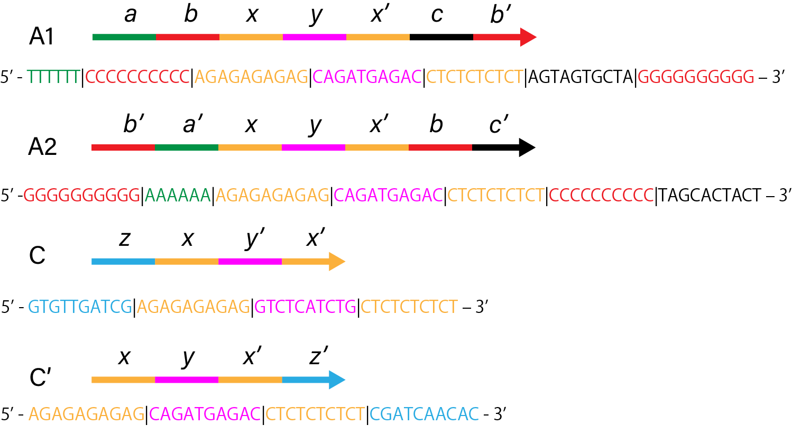
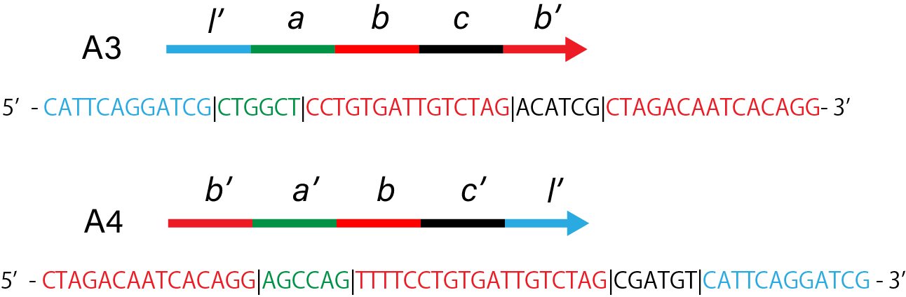
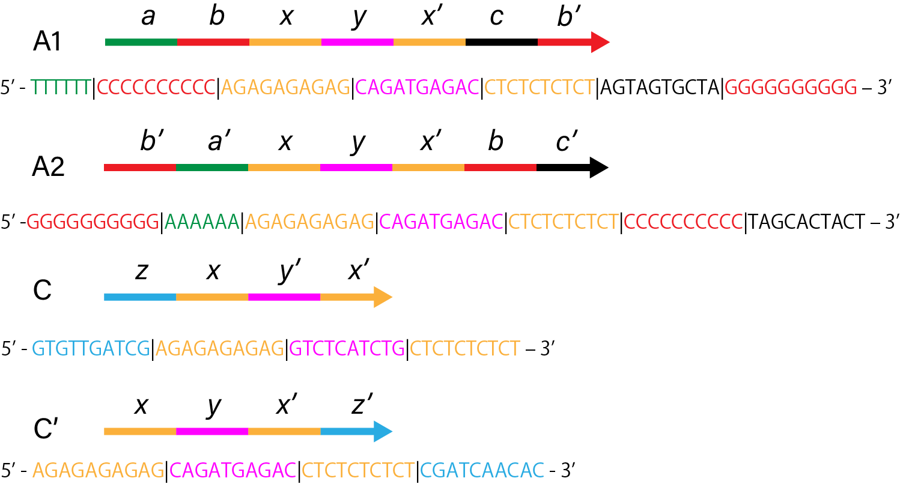
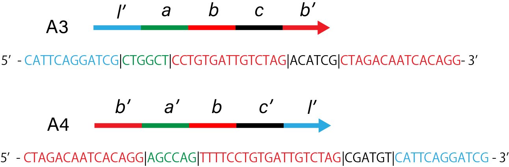

The following figures show the sequence motif of the DNA and their nucleotide sequences. The small letters of a, b, c, … mean each motif, and letters with prime mean complementary sequences.
 

Using the NUPACK(http://www.nupack.org/), the software for the analysis and the design of sequences, the states of the combinations of the above sequences was calculated.
The states of the combinations were estimated based on the result of electrophoresis.
| Sample index | 1 | 2 | 3 | 4 | 5 | 6 | 7 |
|---|---|---|---|---|---|---|---|
| TE Buffer | 7.9 | 7.9 | 7.9 | 7.9 | 7.9 | 7.9 | 7.9 |
| NaCl(5M) | 0.3 | 0.3 | 0.3 | 0.3 | 0.3 | 0.3 | 0.3 |
| H1(10µM) | 0.6 | 0.6 | 0 | 0.6 | 0 | 0.6 | 0 |
| H2(10µM) | 0.6 | 0.6 | 0.6 | 0 | 0.6 | 0 | 0 |
| I_H(10µM) | 0.6 | 0 | 0.6 | 0.6 | 0 | 0 | 0.6 |
| Loading Buffer | 2 | 2 | 2 | 2 | 2 | 2 | 2 |
| Water | 0 | 0.6 | 0.6 | 0.6 | 1.2 | 1.2 | 1.2 |
| Total(µL) | 12 | 12 | 12 | 12 | 12 | 12 | 12 |
Based on the melting curve, the change of the ratio of double-strand was measured along the temperature fall, and the
effect of concentration of I_H on the formation of the gels was estimated.
| Sample index | 1 | 2 | 3 | 4 | 5 |
|---|---|---|---|---|---|
| TE Buffer | 3.6 | 3.6 | 3.6 | 3.6 | 3.6 |
| H1(1mM) | 0.8 | 0.8 | 0.8 | 0.8 | 0.8 |
| H2(1mM) | 0.8 | 0.8 | 0.8 | 0.8 | 0.8 |
| NaCl(500mM) | 1.6 | 1.6 | 1.6 | 1.6 | 1.6 |
| EvaGreen | 0.4 | 0.4 | 0.4 | 0.4 | 0.4 |
| Beacon | 0.8 | 0.8 | 0.8 | 0.8 | 0.8 |
| I_H | 0 | 0.5 (100µM) | 1 (100µM) | 2 (100µM) | 0.5 (1mM) |
| Water | 2 | 1.5 | 1 | 0 | 1.5 |
| Total(µL) | 10 | 10 | 10 | 10 | 10 |
Based on the melting curve, the change of the ratio of double-strand was measured along the temperature fall, and the
effect of NaCl on the formation of the gels was estimated.
| Sample index | 1 | 2 | 3 | 4 |
|---|---|---|---|---|
| TE Buffer | 4.5 | 4.5 | 4.5 | 4.5 |
| H1(1mM) | 1 | 1 | 1 | 1 |
| H2(1mM) | 1 | 1 | 1 | 1 |
| I_H(1mM) | 1 | 1 | 1 | 1 |
| EvaGreen | 0.5 | 0.5 | 0.5 | 0.5 |
| NaCl | 2 (125mM) | 2 (250mM) | 2 (500mM) | 2 (1000mM) |
| Total(µL) | 10 | 10 | 10 | 10 |
Based on the melting curve, the effect of the concentration of Mg
2+ on the formation of the gels was estimated.
| Sample index | 1 | 2 | 3 | 4 |
|---|---|---|---|---|
| TE Buffer | 4.5 | 4.5 | 4.5 | 4.5 |
| EvaGreen | 0.5 | 0.5 | 0.5 | 0.5 |
| H1(1mM) | 1 | 1 | 1 | 1 |
| H2(1mM) | 1 | 1 | 1 | 1 |
| I_H(100µM) | 1 | 1 | 1 | 1 |
| MgSO4(100mM) | 0 | 0.5 | 1 | 2 |
| Loading Buffer | 2 | 2 | 2 | 2 |
| Water | 2 | 1.5 | 1 | 0 |
| Total(µL) | 10 | 10 | 10 | 10 |